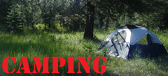
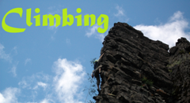
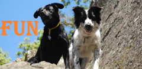
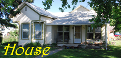

Recent Adventures...
2012_06_Plants
Summer
is coming right along and with it our plants are growing. We've
planted the garden and hopefully soon will be harvesting from it.
We also planted a number of new things this year in our yard.Read more...
2012_06_HikingTheNorthForkUmatillaWilderness
A
couple weekends ago, Tara and I went on a nice little hike up the North
Fork Umatilla River. The North Fork Umatilla River is in a
Wilderness area so only hiking and horseback riding are allowed.
We left home Saturday morning and drove up to the trailhead, which took
about 1.5 hours. We started out on the trail around mid-day and
didn't really have a plan on how far to go.Read more...
2012_06_HikingTheNorthForkWallaWallaRiver_Trail3222
Last weekend, Tara and I went on a hike
with Laura who is from the Native Plant Society. Tara is leading a
Native Plant Society hike next weekend and Laura wanted to show us the
trail and look at some plants.Read more...